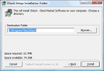
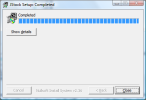

- Home
- ·
- Download
- ·
- Features
- ·
- Indicators
- ·
- Testimonial
- ·
 English
English 中文
中文Installation & Upgrade
How to install JStock on Windows?
- Go to Download, and click on Windows icon.

- Download and save the installer to your desktop. After downloading, there will be an icon at your desktop.

- Double click on the installer. The following screen will be displayed. Click "I Agree" if you agree with GNU General Public License, Version 2.

- Screen with default suggested directory C:\Program Files\JStock will be displayed. You need not to change the suggested directory. It works most of the time. Just click "Install". 
- Installation will begin. When installation finishes, the following screen will be displayed. Click on "Close". 
- Go to Start Menu-> All Programs-> JStock-> JStock to launch JStock application.
How to install JStock on Linux?
user@ubuntu804desktop:~$ cd ~
user@ubuntu804desktop:~$ wget https://github.com/yccheok/jstock/releases/download/release_1-0-7-40/jstock-1.0.7.40-bin.zip
user@ubuntu804desktop:~$ unzip jstock-1.0.7.40-bin.zip
user@ubuntu804desktop:~$ cd jstock/
user@ubuntu804desktop:~/jstock$ chmod 755 jstock.sh
user@ubuntu804desktop:~/jstock$ ./jstock.sh
If you are getting error message "Warning: /bin/java does not exist", you need to install Java in your Linux. For example, here is Install Java In Ubuntu Google search result.
How to install JStock on Mac?
install-jstock-on-mac.pdf (Contributed by Roman Kluka)
How to upgrade latest JStock on Windows?
Unless being stated explicitly through the Yellow Announcement Box under Download, JStock is designed to be backward compatible. Your previous personal data will remain unchanged after upgrading. Just follow the Windows Installation Steps to upgrade. There isn't any need to perform uninstall.
If you want to backup before upgrade, we highly encourage you to make use of Cloud Storage. However, if you feel uncomfortable to store personal data in servers provided by Google, here is another alternative. You may copy the following entire folder to your thumb drive (or any other storage device).
In case you need to restore your personal data, just copy your backup files back to the above mentioned location.
- Windows XP - C:\Documents and Settings\{Your Name}\.jstock\
- Windows Vista - C:\Users\{Your Name}\.jstock\
How to upgrade latest JStock on Linux?
Unless being stated explicitly through the Yellow Announcement Box under Download, JStock is designed to be backward compatible. Your previous personal data will remain unchanged after upgrading. Just follow the Linux Installation Steps to upgrade. There isn't any need to perform uninstall.
If you want to backup before upgrade, we highly encourage you to make use of Cloud Storage. However, if you feel uncomfortable to store personal data in servers provided by Google, here is another alternative. You may copy the following entire folder to your thumb drive (or any other storage device).
In case you need to restore your personal data, just copy your backup files back to the above mentioned location.
- Linux - ~/.jstock/
How to upgrade latest JStock on Mac?
install-jstock-on-mac.pdf (Contributed by Roman Kluka)
How to remove JStock from Windows?
Go to Start Menu-> All Programs-> JStock-> Uninstall JStock to remove JStock from Windows.
How to remove JStock from Linux?
user@ubuntu804desktop:~$ cd ~
user@ubuntu804desktop:~$ rm -r jstock/
user@ubuntu804desktop:~$ rm -r .jstock/
How to remove JStock from Mac?
install-jstock-on-mac.pdf (Contributed by Roman Kluka)